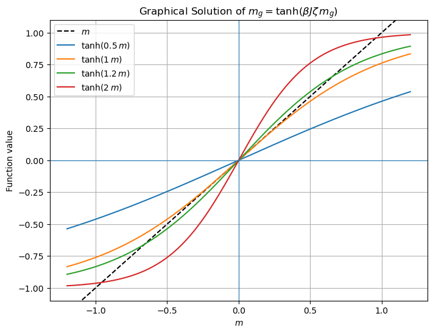

Variational Method#
Recall that in quantum mechanics, the ground state energy can be defined variationally as
To obtain an exact result, the minumum is taken over the full Hilbert space. But we can obtain an upper bound on the \(E_0\) by a “few” parameter ansatz \(\psi=\left|g_{1,}, g_{2}, \cdots\right\rangle\), where \(g_i\) are parameters. For example, we could approximate \(\psi\) by the Gaussian \(\langle r|g\rangle=e^{-\frac{1}{2} g r^{2}}\) with just one parameter \(g\). Then,
The \(|g\rangle\) obtained in this way is in this sense the “best” approximation to \(\left|E_{0}\right\rangle\) in the Hilbert subspace \(\mid \{ g\} \rangle\).
We can do something similar in statistical physics.
Given \(T, H\), we define the free-energy of an arbitrary distribution \(p\) by
where we’ve used the Gibbs entropy
Recall that the Boltzmann distribution \(\hat p\equiv \frac{1}{Z_{\beta}} e^{-\beta H}=e^{-\beta (H-F_0)}\) minimizes the functional \(F\) (Because \(\hat p\) maximizes the Gibbs entropy subject to \(\langle E\rangle\)). Therefore, we have the inequality
Given a few-parameter ansatz \(p_{\mu}(g)\), we can then define our best approximation as
and use \(p(g)\) to compute approximate observables.
Note that there is a simple way to see that (12) is true. First, the difference in approximate and true free energy is
The first term can be rewritten after noting that the structure of the true distribution, \(\hat p=e^{-\beta (H-F_0)}\), allows us to write \(\langle \hat p \rangle_{p} = -\beta (\langle H \rangle_{p} - F_0)\). Thus, we obtain
showing that the difference between the approximate and true free energy is proportional to the “KL” divergence
which is non-negative (see Shannon entropy lecture, eq. (2)).
It is convenient to parameterize \(p(g)\) as a Boltzmann distribution corresponding to a fictitious Hamiltonian \(H_g\),
In terms of \(H_g\), we have
Defining \(\quad e^{-\beta F_{g}}\equiv Z_{g}= \sum_{\mu} e^{-\beta H_{g}(\mu)}\quad\left(F_{g} \neq F[p(g)] !\right)\), we have
The lower bound
is called the “Gibbs’s inequality”. It can be rewritten as
Mean field Ising model#
Let’s try this for the generalized Ising Hamiltonian
where the notation \(\langle i, j\rangle\) indicates that sites \(i\) and \(j\) are in contact (i.e. they are nearest neighbors) and each pair is only counted once. We might then choose a “Mean field ansatz”
where the mean field \(g\) is a parameter we will adjust.
We need to compute \(Z_{g},\left\langle H_{g}\right\rangle_{g},\langle H\rangle_{g}\)
which depends on the mean magnetization \(m_g\) under the fictitious Hamiltonian,
And crucially, because under \(p(g)\) the different spins are uncorrelated,
we obtain for the \(p(g)\) averaged energy
where \(\zeta\) is the number of nearest neighbors each spin has - the so-called coordination number.
Putting it all together
Now, finally, we minimize (\(m_{g}^{\prime}=\partial_{g} m_{g}\)):
So, we obtain the self-consistency condition
which has a simple physical interpretation: in \(H=-J\sum_{\langle i, j\rangle} \sigma_{i} \sigma_{j}\), each \(\sigma_{i}\) sees “on average” a field \(J \zeta \langle \sigma_i\rangle_g=J \zeta m_g\) induced by its neighors - suggesting \(H\approx -J \zeta m_g\sum_i \sigma_i\). Since \(H_{g}=-g \sum_i \sigma_{i}\), the condition is \(g=J \zeta m_g\).
Writing the self-consistency condition in terms of the average magnetization \(m_g\) yields
which is the same condition we found for the all-to-all model, except for the explicit dependence of the RHS on the coordination number. Thus, we obtain the same phenomenology as in the all-to-all model, i.e. a phase transition with the same critical exponents, except that the critical temperature is \(\zeta\)-dependent.
Here’s a graphical solution of
Show code cell source
import numpy as np
import matplotlib.pyplot as plt
# Parameters
J_values = [0.5, 1, 1.2, 2]
beta = 1.0
zeta = 1.0
m_values = np.linspace(-1.2, 1.2, 600) # range for m (a bit beyond [-1,1] for visual padding)
plt.figure(figsize=(8, 6))
# Left-hand side: y = m
plt.plot(m_values, m_values, label='$m$', linestyle='--', color='black')
# Right-hand side: y = tanh(beta * J * zeta * m)
for J in J_values:
rhs = np.tanh(beta * J * zeta * m_values)
plt.plot(m_values, rhs, label=rf'$\tanh({J}\, m)$')
plt.title(r'Graphical Solution of $m_g=\tanh(\beta J \zeta\, m_g)$')
plt.xlabel(r'$m$')
plt.ylabel(r'Function value')
plt.axhline(0, linewidth=0.8)
plt.axvline(0, linewidth=0.8)
plt.ylim(-1.1, 1.1)
plt.grid(True)
plt.legend()
plt.show()

Is this variational approximation good?#
It knows about the lattice and dimensions \(D=1,2,3\) only through coordinatione number \(\zeta\). e.g., for square lattice \(\quad \zeta=2 D \)
But we know that the exact solution of 1D Ising model does not have symmetry breaking: the variational result is bad in 1D. On the other hand, if \((D, \zeta) \rightarrow \infty\), \(F[p(g)]\) is identical to the exact result of the all-to-all model provided that we identify \(J \zeta\) of the mean field model with \(J\) of teh all-to-all model. Mean field approximations are always good in large \(D\) and large \(\zeta\) because every spin is coupled to many other spins such that it nearly sees a mean field generated by those other spins.
For \(D=2,3\), the accuracy is intermediate; it correctly predicts symmetry breaking but doesn’t get \(T_{c}\) or \(m \sim\left|T-T_{c}\right|^{\beta}\) quantitatively right.